UBI places every order through its order engine, a separate long-running UBI process that sends orders to the brokers and can keep working an order after your request has been answered. This article explains what that means for this package: what the package sends as a description for the engine to work out, why a plain limit order comes back without an order id, what a parent is, and how to read an answer that arrived late.
Every order goes through the engine
Until 2026-09-27 UBI had a second placement mode, called direct, in which the API worker sent a plain order to the broker itself and quietly ignored anything only the engine understood. UBI removed it that day, so there is now one path for every order, and the package does not check which mode UBI is in. The table below shows what the engine does for each part of an order this package can send.
| What the order carries | What the engine does with it |
|---|---|
| A plain order: side, type, quantity, price | Sends it to a broker, as the simple type, or holds it
first if it is a plain day limit order (see below) |
price_reference |
Works the price out from the live quote and rounds it to the tick |
quantity_reference |
Works the quantity out from the positions, and chooses the side that closes |
synthetic |
Runs the order as one of the synthetic order types: 54 named types, plus the plan |
| Every answer | Adds an intent_id, and a parent_id for an
order it recorded |
When the engine is not running, UBI refuses the order before queueing
anything, and the package signals ServiceUnavailableError
with UBI’s message
the order engine is not running, so the order was not placed; start unified-orders@order_engine.service.
Portfolio$place_orders() and
Portfolio$rebalance() take the same path. They send one
market order per member in the list form of
POST /api/orders/place, up to 500 orders in one request,
and the engine places them in parallel at whichever broker suits each
one. They do not use the basket synthetic order type, which
is capped at 25 legs and sends every leg to one broker. Asset baskets documents both.
What the package sends as a description
The user decided on 2026-09-26 that order types are built in UBI
rather than in the Python library, and the R port keeps that rule. So
wherever UBI can work a value out itself, the package sends a small
named list describing the value instead of computing it. place_order()
accepts three such lists as its last three arguments, and the table
below lists them and the members that send each one.
| Argument | Describes | Example | Sent by |
|---|---|---|---|
price_reference |
Where the price comes from | list(kind = "offer_level", level = 1) |
28 of the 32 price wrappers, such as
buy_at_best_offer_price() and
sell_at_mid_price()
|
quantity_reference |
How big the order is, from the position held | list(kind = "liquidate_position", product = "intraday") |
reduce_position(), liquidate_position()
and so liquidate_all_positions()
|
synthetic |
Which synthetic order type works the order, with its settings | list(type = "bracket", stop_price = 990, stop_limit_price = 988, target_price = 1010) |
Every synthetic order class in the R/orders_*.R files;
the two position methods above, which send
list(type = "simple", closes_position = TRUE); and the two
limit wrappers with hold = FALSE, which send
list(type = "simple")
|
The client writes each named list as a JSON object, so
list(kind = "offer_level", level = 1) reaches UBI as
{"kind": "offer_level", "level": 1}. UBI documents how each
reference becomes a number on Price
and quantity references.
A dry run
The example below is a dry run of a limit buy of one RELIANCE share,
priced at the best offer by a price_reference. A dry run
asks UBI to prepare the order and answer with the request it would send,
without sending it, so it is the safe way to see what an order would
do.
reliance <- Equity$new("nse", "RELIANCE")
answer <- reliance$place_order(
"buy",
"limit",
1,
"cnc",
price_reference = list(
kind = "offer_level",
level = 1
),
dry_run = TRUE
)
str(answer)The answer is a named list. When the Python library ran the same dry
run against a local UBI on Saturday 2026-09-26, the day before UBI
removed direct placement, the answer showed the request UBI would have
sent to Stoxkart, the broker it chose, with the price 1226.0 worked out
from the best offer, and the intent_id the engine adds to
every answer. The answer contained no account identifier.
Plain limit orders are held
Since 2026-09-27 the engine does not send a plain limit order to a
broker straight away. It holds it in its own order book, as a
virtual_limit order, and sends it only once the other side
of the book reaches its price: for a buy, when the best offer is at or
below it. A limit that never fills therefore costs no order messages at
all, where a resting one costs a place and a cancel. The animation below
follows one held buy.

UBI decides which orders are held by the rule in the table below.
| Order | Held? |
|---|---|
limit with a price, day
validity and no synthetic list |
Yes |
limit with after_market = TRUE
|
No, sent at once, because the broker queues it for the next session |
limit with
synthetic = list(type = "simple"), which
hold = FALSE sends |
No, sent at once |
limit with ioc validity |
No, sent at once |
market |
No, but sent as a marketable limit, as the next section describes |
sl, sl-m, or a limit priced
only by a price_reference
|
No, sent at once |
Any order naming another synthetic type |
Run as that type |
A held order changes what your program sees, in the four ways listed below.
-
place_order()answers with HTTP 202, anoutcomeofarmed, aparent_idand anorder_idofNULL, because no broker order exists yet. - The order is not in
ordersoropen_orders, which read the brokers’ order books. It is inparents. - It is changed by naming its parent:
modify_order(parent_id = ..., price = ..., quantity = ...). Only the price and the quantity can change, and nothing is sent to a broker. - It is cancelled with
cancel_parent(parent_id), notcancel_order(), which needs a broker order id.
When to send a limit order at once
A held order is sent only when a live quote shows the other side
reaching its price, and the engine never acts on a stale quote. An
instrument that no broker quotes would therefore wait all day and never
be sent. buy_at_limit_price() and
sell_at_limit_price() take hold = FALSE for
that case, and the table below lists the members that always pass
it.
| Member | Why it sends at once |
|---|---|
MutualFund$add_to_holdings(),
reduce_holdings(), liquidate_holdings() with a
price |
No broker that serves quotes carries the mutual fund segment |
FixedIncome$add_to_holdings(),
reduce_holdings(), liquidate_holdings() with a
price |
No broker that serves quotes carries a cash bond |
For any other order, pass hold = FALSE to a limit
wrapper, or synthetic = list(type = "simple") to
place_order(), whenever the order must rest at the exchange
straight away.
An after-market limit order needs no hold = FALSE. UBI
has sent every after-market order to the broker at once since
2026-09-27, because the broker queues it for the next session and no
live quote would arrive to release a held one. A live test of the Python
library that evening placed after-market limit orders through
buy_at_limit_price, sell_at_limit_price,
add_to_holdings and reduce_holdings, and every
one reached a broker rather than being held. The R wrappers send the
same request bodies, so they behave the same way.
Market orders are sent as marketable limits
Since 2026-10-06 the engine does not send a plain market order to a
broker as a market order either. It runs it as a
marketable_limit order: a limit two ticks past
the other side’s best price, which for a buy is the best offer, so it
trades at once against what rests there but cannot fill far from the
price that was showing. On every later tick the engine moves the limit
after that price, through its repricing throttle, and 30 seconds after
the order was placed it cancels whatever has not filled. The parent then
ends completed with what filled, or cancelled
when nothing did.
The engine refuses such an order with HTTP 409, which the package
signals as ConflictError, and sends nothing, when it cannot
be priced as it arrives. The table below lists the four cases and UBI’s
messages.
| Book when the order arrives | UBI’s status_message
|
|---|---|
| A buy, and nobody is offering | nobody is offering this instrument, so the BUY could not be priced and nothing was sent |
| A sell, and nobody is bidding | nobody is bidding for this instrument, so the SELL could not be priced and nothing was sent |
| No live quote yet | no live quote has arrived for this instrument, so the <side> could not be priced and nothing was sent |
| The quote is marked stale | the live quote for this instrument is marked stale, so the <side> could not be priced and nothing was sent |
Three kinds of market order are still sent as market orders. An
after-market order is one, because no live book exists to price it from.
An order that names any synthetic type is another,
simple included, which is how
reduce_position(), liquidate_position(),
liquidate_all_positions() and
Account$flatten() keep their closing orders as real market
orders. The third is every market order while UBI’s
UNIFIED_BROKER_INTERFACE_API_ORDER_MARKET_AS_LIMIT switch
is off; it is on by default.
The table below lists the members that ask for a real market order on purpose.
| Member | How it asks | Why |
|---|---|---|
buy_at_market_price(),
sell_at_market_price()
|
as_marketable_limit = FALSE |
Your choice, such as for an instrument nobody quotes |
Portfolio$place_orders(),
Portfolio$rebalance()
|
as_marketable_limit = FALSE |
Your choice, for every member at once |
MutualFund and FixedIncome holdings
methods without a price |
always | Nothing quotes them, so a marketable limit would always be refused |
reduce_position(), liquidate_position(),
liquidate_all_positions() without a price |
always, through synthetic = list(type = "simple")
|
They already named a type, so UBI leaves them alone |
Each move of the resting limit is a modification, which counts
against the broker’s daily order messages like a placement. UBI allows
each order one move a second by default, so one order can send about
thirty modifications before it is cancelled. To choose a different
buffer or time for one order, use MarketableLimitOrder.
A dry run still shows the request as a market order, and adds the plan
it would run as.
Parents
A parent is one order the engine was asked for, such as a bracket, a
trailing stop or a held limit order, and its legs are the broker orders
it placed. Every order the engine records answers with a
parent_id, and since 2026-09-27 every row of the order and
trade books names its parent in engine_parent_id, with the
leg’s leg_role, the parent’s synthetic_type
and its intent_id. The table below lists the members that
work with parents.
| Member | On | What it does |
|---|---|---|
parents |
TradeableInstrument |
This instrument’s parents that have not finished, as a data frame |
parent(parent_id) |
TradeableInstrument |
One parent, whether or not it has finished |
cancel_parent(parent_id) |
TradeableInstrument |
Cancels a parent and every leg it still has resting at a broker |
parent_orders(parent_id),
parent_trades(parent_id)
|
TradeableInstrument |
The parent’s rows from the order and trade books |
parent_id, cancel(), parent,
orders, trades
|
Every synthetic order class | The same, for the order the object placed |
parents |
Account |
Every open parent in the account |
A leg of a parent can still be changed with
modify_order() and cancelled with
cancel_order(), and UBI hands the change to the engine so
the order type carries on from it. Only a leg’s price, trigger price and
quantity can change. Cancelling one leg does not stop the parent;
cancel_parent() does.
Cancelling everything in one instrument
cancel_open_orders() has to cancel both kinds of waiting
order, the ones held in the engine and the ones resting at a broker,
without cancelling the same order twice. The numbered steps below are
what it does.
- It reads this instrument’s open parents and cancels each with
cancel_parent(). It does this first, because a synthetic order left running could place a new order after its old ones had been cancelled. - It reads the instrument’s open orders from the order book.
- It leaves out every order whose
engine_parent_idis a parent the engine took a cancel for in step 1, because the engine has already dealt with it. An order whose parent’s cancel failed, for example because the engine was not running, is kept, so it is still cancelled. - It cancels the remaining orders in one request, using the list form of UBI’s cancel route.
- It returns one row per parent and per order, with
cancelledanderror, and never signals an error for one failed cancel.
A parent whose cancel a broker refused for one leg comes back with
the state cancelling rather than cancelled,
which UBI answers with HTTP 207. The package returns that answer rather
than signalling an error, and cancel_open_orders() reports
such a parent as not cancelled, because one of its legs may still be
live.
Reading an answer later
Every answer to placing an order carries an intent_id.
When UBI’s wait for the engine runs out, the order may still be placed,
and Account$intent(intent_id) reads what the engine did
with it once it has answered. UBI keeps each answer for five minutes by
default. The table below lists the three clocks that can run out around
an order, and what each signals.
| Clock | Default | What happens | Signalled in your program |
|---|---|---|---|
UBI waiting for its engine,
UNIFIED_BROKER_INTERFACE_API_ORDER_ENGINE_TIMEOUT_SECONDS
|
5 seconds | UBI answers HTTP 504 with outcome: unknown and the
message in status_message:
the order engine did not answer within 5.0 seconds, so this order may still be placed
|
OrderOutcomeUnknownError, whose detail
field carries the intent_id to pass to
Account$intent()
|
| No engine running at all | none | UBI answers HTTP 503 before queueing anything | ServiceUnavailableError |
| The client’s own wait for any response | 30 seconds per request | No response arrives, and httr2 signals a failure |
UnreachableError, whose parent field holds
the httr2 condition |
The code below shows how to catch the first case, keep the
intent_id, and read the engine’s answer a little later. It
is a sketch rather than a recipe, and it places a real order.
tryCatch() matches a handler against any class in the
condition’s class vector, so a handler for
OrderOutcomeUnknownError catches only that case. Reading
the intent too soon signals NotFoundError, because the
engine has not answered yet.
reliance <- Equity$new("nse", "RELIANCE")
intent_id <- NULL
answer <- tryCatch(
reliance$buy_at_best_offer_price(quantity = 1, product = "cnc"),
OrderOutcomeUnknownError = function(error) {
intent_id <<- error$detail$intent_id
NULL
}
)
if (!is.null(intent_id)) {
Sys.sleep(10)
account <- Account$new()
engine_answer <- account$intent(intent_id)
}An engine that restarts reads unfinished intents again. If an intent
had already started a parent, UBI answers HTTP 409 rather than placing
it a second time, which the package signals as
ConflictError; read the parent for its outcome.
Under the hood.
The order routes are called from TradeableInstrument in
R/assets_instruments.R, through the package constants
INSTRUMENTS_ORDER_PLACE_PATH,
INSTRUMENTS_ORDER_MODIFY_PATH,
INSTRUMENTS_ORDER_CANCEL_PATH and
INSTRUMENTS_ORDER_PARENTS_PATH, and from
Account in R/accounts_account.R, through
ACCOUNTS_PARENTS_PATH and
ACCOUNTS_INTENT_PATH. cancel_open_orders()
uses two private methods, cancel_one_parent() and
cancel_order_list(). The reasoning, including why the old
placement-mode check was removed, is in the Python library’s sidecar
note
.claude/notes/src/tradingmachine/assets/instruments.py.md,
and the R port’s own differences are in
.claude/notes/R/assets_instruments.R.md.
The members involved are documented in the guide: Orders, Price wrappers, Synthetic orders and Account. UBI’s own page is Order engine.